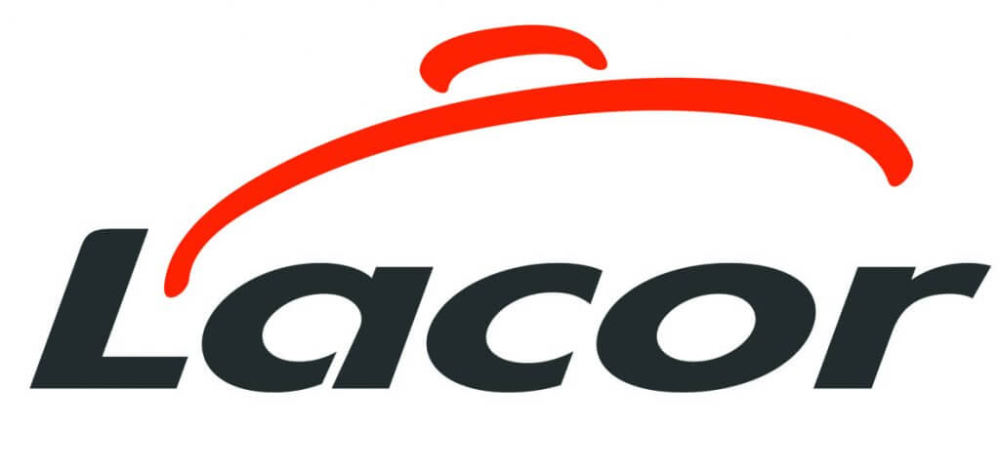

Portfolio
Sandra Caeiro Pires
Analista de Datos | Data Scientist
Soy Sandra Caeiro Pires, profesional especializada en análisis de datos con experiencia en transformar información en conocimiento y optimizar procesos. Mi enfoque combina programación, conocimiento de bases de datos y visualización para generar impacto y apoyar decisiones estratégicas.
Mi formación en Inteligencia Artificial y Big Data de Miguel Altuna y mi experiencia profesional en Lacor Menaje me han permitido desarrollar soluciones de automatización y visualización para mejorar la toma de decisiones y optimizar procesos productivos.

Áreas de Especialización
ETL
### Visualización de Datos Creación de dashboards interactivos y sistemas de seguimiento en tiempo real utilizando Power BI, Grafana, Matplotlib y Tableau.
 ### Automatización Desarrollo de scripts y soluciones automatizadas para extracción, transformación y monitoreo de datos de producción.
### Automatización Desarrollo de scripts y soluciones automatizadas para extracción, transformación y monitoreo de datos de producción.
 ### Análisis Avanzado Optimización de procesos productivos mediante análisis de datos y algoritmos de eficiencia.
### Análisis Avanzado Optimización de procesos productivos mediante análisis de datos y algoritmos de eficiencia.
Proyectos Destacados
Visualización y Automatización en Lacor

Desarrollo de scripts para extracción, limpieza y análisis de datos usando Python y R. Gestión de bases de datos y creación de reportes interactivos.
Implementación de sistemas de visualización para seguimiento en tiempo real de consumos de máquinas y diseño de dashboards interactivos para la toma de decisiones estratégicas.
Extracción de datos de Consumos WebScraping en Lacor

Extracción de Informes de los consumos tanto de las maquinas como de la planta y las placas solares para un futuro implemento de saber cuantos gastos tiene cada una.
Lenguajes de Programación
 #### Python Análisis de datos, automatización y desarrollo de scripts para ETL (Extract, Transform, Load).
#### Python Análisis de datos, automatización y desarrollo de scripts para ETL (Extract, Transform, Load).
 #### R Análisis estadístico y visualización de datos para proyectos de data science.
#### R Análisis estadístico y visualización de datos para proyectos de data science.
 #### SQL Gestión, consulta y optimización de bases de datos relacionales.
#### SQL Gestión, consulta y optimización de bases de datos relacionales.
 #### HTML/SVG Desarrollo de interfaces web y gráficos vectoriales para visualizaciones.
#### HTML/SVG Desarrollo de interfaces web y gráficos vectoriales para visualizaciones.
Visualización de Datos
 #### Power BI Creación de dashboards interactivos y análisis de datos empresariales.
#### Power BI Creación de dashboards interactivos y análisis de datos empresariales.
 #### Grafana Implementación de sistemas de monitoreo y visualización en tiempo real.
#### Grafana Implementación de sistemas de monitoreo y visualización en tiempo real.
 #### Matplotlib/Seaborn Visualización de datos científicos con librerías de Python.
#### Matplotlib/Seaborn Visualización de datos científicos con librerías de Python.
 #### Tableau Desarrollo de visualizaciones dinámicas para análisis de negocio.
#### Tableau Desarrollo de visualizaciones dinámicas para análisis de negocio.
Bases de Datos
 #### MongoDB Gestión de bases de datos NoSQL para datos no estructurados.
#### MongoDB Gestión de bases de datos NoSQL para datos no estructurados.
 #### SQL Server Administración de bases de datos empresariales.
#### SQL Server Administración de bases de datos empresariales.
 #### InfluxDB Bases de datos de series temporales para monitoreo.
#### InfluxDB Bases de datos de series temporales para monitoreo.
 #### MySQL Gestión de bases de datos relacionales open source.
#### MySQL Gestión de bases de datos relacionales open source.
Herramientas y Tecnologías
 #### Git/GitHub Control de versiones y colaboración en desarrollo de software.
#### Git/GitHub Control de versiones y colaboración en desarrollo de software.
 #### Excel Avanzado Análisis, modelado y visualización de datos corporativos.
#### Excel Avanzado Análisis, modelado y visualización de datos corporativos.
 #### Adobe Suite Photoshop, Premiere Pro, After Effects para edición visual.
#### Adobe Suite Photoshop, Premiere Pro, After Effects para edición visual.
 #### Modelado 3D Autodesk Maya, 3ds Max, MudBox para diseño tridimensional.
#### Modelado 3D Autodesk Maya, 3ds Max, MudBox para diseño tridimensional.
Formación Académica
Especialización en Inteligencia Artificial y Big Data
Miguel Altuna | Septiembre 2024 - Mayo 2025
- Desarrollo de scripts para extracción, limpieza y consolidación de datos
- Análisis y transformación mediante Python y R
- Gestión de bases de datos y creación de dashboards interactivos
Grado Superior en Animación 3D y Programación
Ceinpro | Septiembre 2019 - Junio 2021
- Diseño y desarrollo de entornos interactivos y multimedia
- Programación de aplicaciones y sistemas visuales
Idiomas y Habilidades Adicionales
Idiomas
- Español: Nativo
- Euskera: Nativo, B2
- Inglés: B2
Cualidades Personales
- Alta capacidad para trabajo en equipo
- Actitud positiva y proactiva
- Orientación a resultados
- Carné de conducir y vehículo propio